Tutorial - A Guided Tour
This page is a screen-by-screen walkthrough of Outpost Builder, illustrated with real screenshots from a live editor session, not mockups. If you already know the plugin, skip to Reference or Extending Outpost Builder instead. If you're new, this is the fastest way to see what every panel and overlay actually looks like before you touch it yourself.
What you'll build in 10 minutes: across this walkthrough you'll:
- Enter Outpost Builder mode and place an outpost.
- Add a plot, seeing both the valid and the invalid placement states.
- Assign a building, and meet the ownership beams and selection markers.
- Remove a plot both ways.
- Frame an Overhead camera.
- Take a short detour into reshaping the outpost's Outpost Volume.
- See where the per-user and per-project settings live.
The captures come from a session with one demo outpost and three plots.
Tip: every hotkey mentioned here is rebindable in Editor Preferences > Keyboard Shortcuts. The chords below are the shipped defaults.
1. Entering the Mode: The Overview Panel
Open the level editor's Modes panel (top-left toolbar, the wrench icon) and select Outpost Builder. You land in the Overview panel, which has two tabs: Outposts and Buildings.
The Outposts Tab
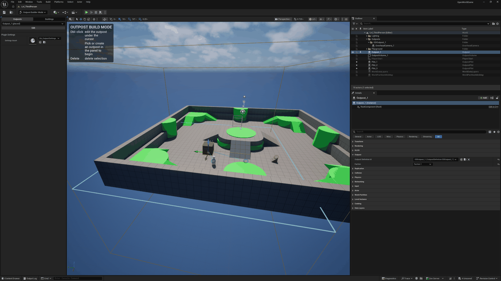
The combo at the top lists every outpost definition in the project, both placed and not. Selecting one turns the button below into a context-sensitive action: Edit (jumps straight into editing a placed outpost), Edit (Place Actor) (for a definition with no live actor yet), or Restore (for one that was deleted but is still recorded).
The combo also lists the reverse loss: outpost actors standing in the map whose definition asset is gone show up as a "(missing definition)" entry, and the button becomes Restore Definition. It rebuilds the asset from the actors' own configuration.
Picking the sentinel entry, Add New Outpost, turns the button into Create instead. That's how you start a brand new outpost from scratch.
Below that sits Plugin Settings, a single field pointing at the project's one shared
UOutpostBuilderSettingsAsset (the Settings Asset pointer). That data asset holds every project-wide
tunable: the folder new outpost definitions are saved into, the definition name prefix, the outpost
exclusion distance, and the four actor-class overrides. We'll open that asset itself later in
Section 8.
The Buildings Tab
Click the Buildings segmented-control tab to switch. This is a live browser over every
UOutpostBuildingDefinition in the project.
Click + New Building to create one on the spot (no save dialog: it's named and saved automatically), click an existing entry to edit its fields inline in the Details view right there in the panel, or select one and click Find References in World to see every placed plot using it.
This browser is the Overview panel's, and it stays there. The Editing panel has no Buildings browser of its own.
Once you're mid-edit on an outpost you reach a building a different way: the Selected Building section shows an inline Details view for whichever building is currently hot in the palette, and + New Building sits right in the Select Plot Contents heading row.
Between them you can retune or create a building without leaving the outpost you're building out. We'll get to both in Section 3.
Tip: double-clicking a building tile anywhere in the palette (not this list, but the palette further down) opens its asset editor directly.
2. Placing an Outpost
From the Outposts tab, pick Add New Outpost and click Create (or, on an existing but never-placed definition, Edit (Place Actor)). Either way you enter placement:
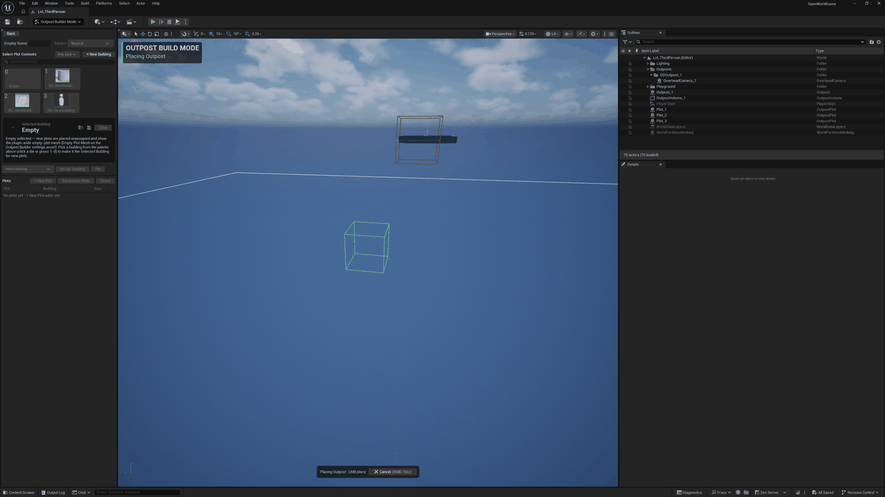
Three things are on screen at once, and they always agree with each other:
- The ghost itself - a green wire box that follows your cursor, with a matching ground square marking the exclusion distance around it. Both flip to red (with a reason, like "Too close to OutpostVolume_1") if you're within that distance of another outpost's Outpost Volume.
- The build-mode banner (top-left) - states the current mode and sub-state ("Placing Outpost") and the live hotkey legend for whatever you're doing right now.
- The bottom-center placement overlay - the same information as a compact action bar, plus a Cancel button.
Move the mouse to reposition the ghost, and left-click to confirm. Right-click (a tap, not a
drag) or Esc cancels instead. Confirming spawns the outpost actor, auto-creates its
UOutpostDefinition asset, and drops you straight into the Editing panel. Placement is axis-aligned.
Rotate placed actors with the ordinary transform gizmo afterwards.
Warning: a new outpost can't be placed within the Outpost Exclusion Distance of another outpost's Outpost Volume (a project-wide distance from
UOutpostBuilderSettingsAsset, 30 m by default). The ghost simply won't validate there, the same kind of rule you'll see enforced for plots in Section 4.
3. The Editing Panel
There are three ways into this. Placing an outpost drops you here automatically, clicking Edit on one from the Outposts tab gets you here, and so does double-clicking the outpost actor in the viewport. Double-click the outpost you're already editing and you leave again, back to the Overview.
It's a double-click rather than a single one deliberately: selecting an outpost to read its details is something you'll do constantly, and entering editing isn't free (it cancels any placement session, swaps the whole panel, and can spawn an Overhead camera), so plain selection stays out of it.
However you got here, the panel switches to the Editing view:
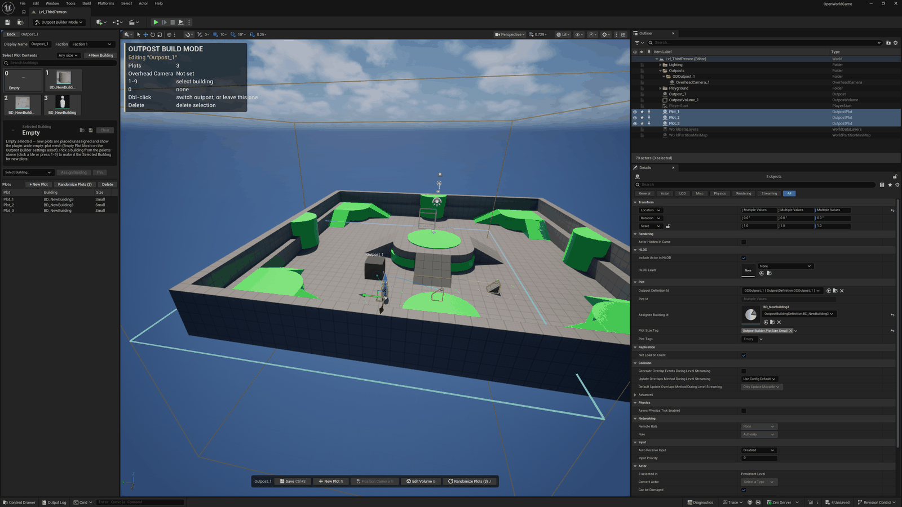
The big pieces, roughly top to bottom. This isn't the whole panel, just the parts you'll use first:
- The identity header - Display Name (a plain text field) and Faction (a combo; Faction has
no visual effect on its own and only gates which buildings a plot may field via each building's
SupportedFactions). - Select Plot Contents - the building palette.
- Tile 0 is always Empty (clears the hot building so new plots are placed unassigned). Every other tile is a building definition, numbered for the 1-9 hotkeys.
- Click a tile (or press its number) to make it the hot building. Every plot you place next gets it automatically.
- The section's heading row carries a size filter and + New Building as well, so creating a building never means leaving the outpost you're editing.
- Selected Building - an inline details view for whichever tile is hot, so you can tweak a building's fields without leaving the outpost you're editing.
- The Assign row - a building picker combo, Assign Building, and Pin/Unpin. There's a section on it just below, because it does two things the palette above can't.
- Plots - every plot on this outpost, its assigned building, and its size, plus + New Plot and Randomize Plots, which assigns a fresh, eligible building to every selected plot. The button's own label carries the live selected count. There's a narrow fourth column with no header text, which is where the drift warning shows up (see Plot Tags below).
The in-viewport editing bar at the bottom of the viewport is the fast path to Save plus the four editing verbs (+ New Plot, Position Camera, Edit Volume, Randomize Plots), each showing its own rebindable hotkey.
The banner (top-left) mirrors the same state in words: which outpost you're editing, how many plots it has, and whether its Overhead camera has a saved framing yet.
Finding a Building Fast
Two shortcuts sit around the palette, and they're easy to miss.
The eyedropper is E. Point at a plot that already has the building you want and press it, and that building becomes the Selected Building.
With the cursor off in empty space it falls back to the single plot you have selected, so it works from the panel too.
Point it at an unassigned plot and it selects Empty and says so in a short toast, which is deliberate: a key that appears to do nothing is worse than one that tells you it picked "nothing".
Fair warning, E isn't a free key in Unreal. It's the Rotate widget-mode key and the flycam's up key, and we took it anyway because it's the key The Sims uses for this exact verb.
The trade is covered by refusing the key whenever there's nothing to pick, and always while you're mid-drag in the viewport, so E keeps flying the camera and keeps reaching the Rotate widget everywhere the tool has no answer. Rebind it in Keyboard Shortcuts if you'd rather have it back.
Dragging a definition from the Content Browser onto the tile grid works too. Be clear on what it does, though: it can't add a building to the palette, because that roster is derived from a scan of every building definition in the project, so whatever you dropped was already a member.
What the drop genuinely changes is that the building becomes pinned (so it shows ahead of the others and stops counting against the cap) and becomes the Selected Building. The cursor tells you both of those before you let go.
A drop the outpost's faction can't field is refused outright, since pinning it would write a permanent setting that could never produce a tile.
The Assign Row: Re-assigning and Pinning
The palette decides what the NEXT plot you place gets. The Assign row is how you change a plot that already exists.
Select the plot in the viewport (or in the Plots list), pick a building in the row's combo, and click Assign Building. That's the whole gesture.
It's also a single undo step: the click writes both the plot actor and the outpost definition's record for that plot, inside one transaction.
Assign Building is deliberately picky. It refuses a building the plot can't legally field. The toast names the rule that refused: either the building needs a different plot size, or a non-Neutral outpost's faction doesn't field it.
The faction half you'll rarely meet here, because the palette already leaves out anything the editing outpost's faction can't field. The size half you will, since the palette only filters by size when you've set the heading row's size filter.
Pin/Unpin is the other half of the row. It solves a problem you won't hit until a project has grown. The palette shows a capped number of buildings by default (nine at time of writing, the settings asset's Max Default Building Palette Entries).
Once a project has more definitions than that, the extras simply don't appear. Pinning a building makes it always show, in addition to that count rather than counted against it. Pinned entries also float to the front of the palette.
Pins are per-project workflow state saved silently the moment you click, so there's no asset to dirty and nothing to remember to save.
Note: Unpin doesn't necessarily hide a building. It only removes the pin. A building that was already inside the default count keeps showing on its own merits.
Plot Tags and the Plot Tag Query
A plot carries a Plot Tags container, an ordinary gameplay-tag set on the plot actor, editable in the Details panel. A building carries a Plot Tag Query it would like a plot's tags to satisfy. The vocabulary is entirely yours: the plugin defines no tags of its own here and doesn't care what yours mean.
The important part is that this pairing is warn-only. It never refuses an assignment, never blocks a placement, and never stops a plot rendering its building. What it does is tell you.
Assign a building whose query the plot's tags don't satisfy and the Assign Building tooltip appends a warning line before you click. Afterwards, that plot's row in the Plots list shows a small warning triangle in the narrow last column, with a tooltip naming the mismatch.
The same triangle shows up for drift, which is the case you're more likely to meet: a plot that was fine when you assigned it, then had its tags edited afterwards.
Clearing the icon means editing one side or the other, the plot's tags or the building's query. There's deliberately nothing that resolves it for you, since the plugin has no idea which side is right.
4. Adding a Plot: Valid and Invalid Ground
Click + New Plot (or press N) to start placing a plot. This is where the in-viewport building command grid shows up. It's a compact tile grid pinned to a corner of the viewport, each tile showing its digit badge and the building's name, so you can pick a hot building without looking away from the ghost:
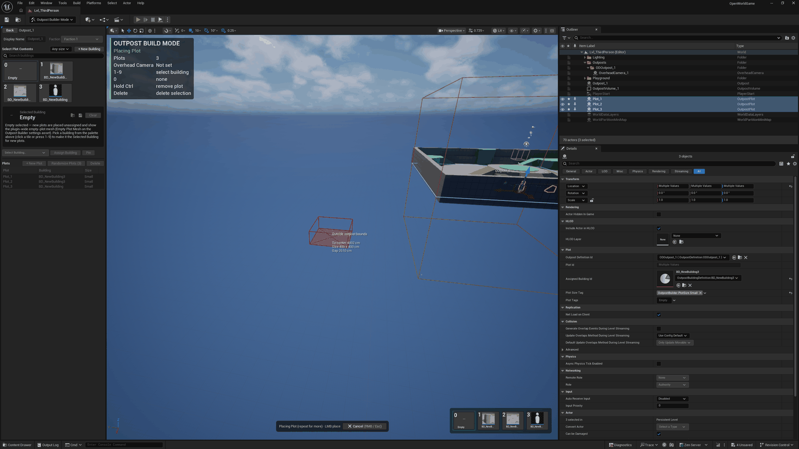
Green means this spot clears every existing plot's footprint and the plot's whole pad fits inside the outpost's own volume. A plot can't hang past its outpost's bounds. The reason text says so if you try.
Move the ghost over (or very near) an existing plot instead, and both the wire square and the flat placement plate flip to a hard red, with a named reason:
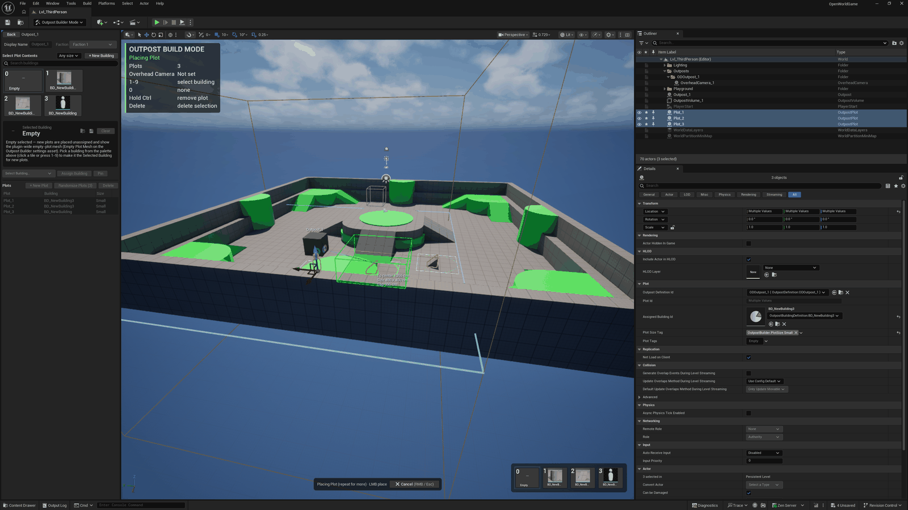
The grid's digit badges (bottom-right, 0 through however many building definitions fit) are the exact same hotkeys as the panel's own palette, which means the grid and the panel palette can never disagree about which key does what.
Press a digit to make that building hot, or 0 for Empty. Left-click to confirm a valid spot (repeat as many times as you like, since the tool stays in placement mode). Right-tap or Esc to stop.
Tip: the ghost's color is a hard flip, not a gradient. There's no "almost valid" state to squint at.
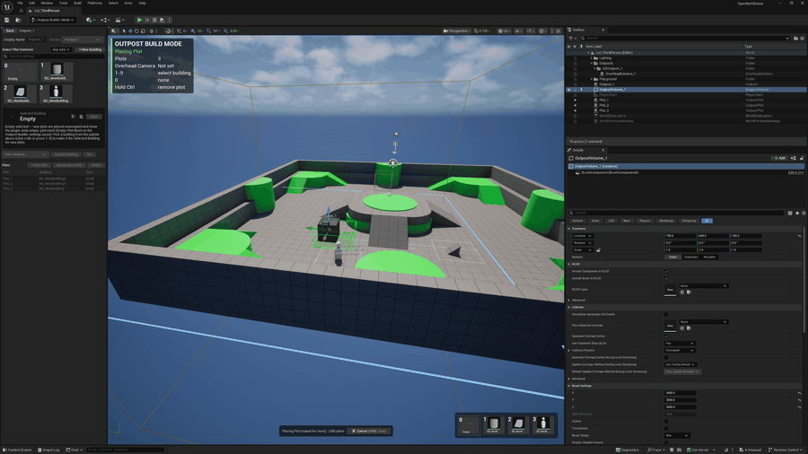
That flip is the one thing a still cannot show you, so it gets a short clip. Watch the plate, not the cursor: it changes the instant the footprint would overlap, with nothing in between.
There's a third state between those two captures. If the building you've got selected carries a Plot Tag Query that a brand-new plot won't satisfy (a new plot is born with no tags at all), the plate goes hollow amber: outline only, no fill, with a line reading "Plot tags won't match <building> (places anyway)".
That last part is the whole point. Amber is an advisory, not a refusal, and the click still places. Red always wins over amber, so a spot that's genuinely blocked never softens into a warning.
The three states differ by FILL, not just by color: solid, hollow, solid-plus-an-X. Drain the color out of your screen and you can still tell them apart, which matters because roughly 99% of colorblind users are red-green.
Reading the Numbers While You Place
Two aids ride alongside the plot ghost while you're placing. Both are on out of the box, and each has its own switch under the Debug|Placement Aids category of Editor Preferences if you'd rather not have it.
Three live numbers sit beside the ghost, on the opposite side from the refusal text so a reason and its measurements never land on top of each other. They read "To center" (how far the ghost is from its outpost's center), "Size" (the pad this plot will claim), and "Gap" (the clear distance to the nearest neighboring plot's edge).
The gap is measured edge to edge between the drawn squares, not center to center, so it's the number you're actually looking at on screen. When it goes negative it says Overlap instead, with the honest word for it.
There's no gap line at all on an outpost's first plot, since there's nothing yet to be near.
An alignment guide appears along the axis whenever the ghost lines up with a nearby plot on X or Y, so "in a row with that one" is something you can see instead of something you eyeball.
The target set is kept deliberately small: only nearby siblings, only like for like (near edge to near edge, far edge to far edge, center to center), and only one line per axis. A cloud of snap points helps nobody.
Note that a plot actor you've rotated with the gizmo produces no guide. Its edges no longer run along the world axes this search compares, so a line drawn to them would point somewhere its footprint doesn't reach.
That holds for any rotation at all, quarter turns included, even though a square spun 90 degrees is still square to the world.
By default the guide only draws. Turn on Snap To Alignment Guides and the ghost will also be pulled onto the line it's already close to. It won't fight the editor's own grid snap: the grid keeps any axis with no guide on it, and an axis with one moves at most the tolerance you've set.
Ownership Beams and Selection Markers
Now that there's more than one actor in the level, click one and the viewport starts talking. Two draws show up the moment something is selected. They're the first thing newcomers ask about.
Ownership beams answer "what belongs to what". Select the outpost and it draws a pulsing beam out to each of its plots. Select a single plot and it draws exactly one beam back to its owning outpost.
The flow is always from the thing you selected toward the thing you didn't, with a bright pulse packet traveling that way once per cycle and ending in a small ring splash at the far end.
Every beam cycles a vibrant color palette indexed by plot, which is worth saying plainly because it's easy to misread: beam color means nothing about faction. It's there so overlapping beams stay tellable apart.
Selection markers answer "what exactly did I select, and how big is it". Every selected outpost and plot gets a crisp rim circle at its base.
That circle is the same footprint placement enforces, not a decoration around the mesh. So a building whose mesh overflows its rim is telling you something real about the pad it's sitting on. A selected plot whose footprint overlaps a sibling's draws its rim in red instead.
There's a third, quieter one: hover an unselected outpost or plot while you're not placing and it picks up a thin white ring. That's a distinct channel on purpose.
White reads as hover, green as selection, and red as invalid or destructive. The plugin tries hard not to let those three meanings bleed into each other. All three colors are per-user knobs, so a teammate's editor may not match yours exactly.
You'll also notice a flat blue rectangle around each base that's there whether or not anything is selected. That's the territory border, the visible boundary of the outpost's Outpost Volume, and Section 7 is where you reshape it.
Once you have a second outpost, one more thing happens while you're editing one of them. Every OTHER outpost's name label and volume border fades back, so the one you're working on reads first.
Be precise about what that is and isn't: it fades exactly those two draws, and nothing else. No actor, mesh, or material is touched, so the buildings look identical either way.
Selection rims, ownership beams, and the hover ring never fade at all, because those mark something you just selected or pointed at, and dimming the answer to a question you asked would be no help.
The fade drains toward the color's own brightness rather than swapping in a second tint, so a faded overlay can never be mistaken for a faction (nothing in this plugin is colored by faction).
Nothing fades while you're not editing anything, which is the state to check first if it ever looks wrong. The master switch and its two amount knobs live under Debug|Selection in Editor Preferences.
Tip: the beams pulse in real time, which is why the mode forces every level viewport to redraw continuously while it's active. If you're profiling something else, that's the reason.
5. Removing a Plot: Ctrl-Remove and the Delete Key
There are two ways to get rid of a plot, and they're both destructive in the same way, so it's worth knowing both before you reach for either.
Ctrl-Remove, Mid-Placement
While placing a plot, hold Ctrl to switch the same tool into remove mode instead of add mode. There's no need to cancel placement first:
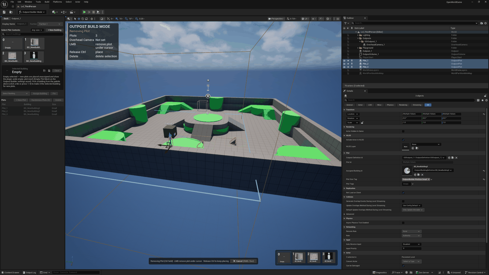
Whatever plot is under your cursor gets a flat red candidate plate (the same visual language as an invalid placement, since red always means "destructive or blocked" in this plugin). Left-click deletes that plot and its record in one step; release Ctrl to go straight back to placing normally, ghost and all, right where you left off.
Warning: this is genuinely destructive. It deletes the plot's definition record, not just the actor. It's still one undo step (Ctrl+Z) if you didn't mean it.
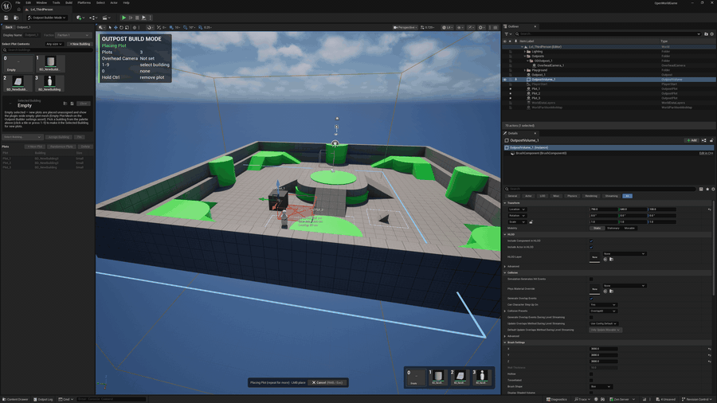
The hold and the release are the whole gesture, which is why this one is a clip too. The placement session never ends: Ctrl borrows the click, and letting go hands it straight back.
The Delete Key, Any Time
You don't have to be in placement mode to remove a plot. Select one (or several) in the viewport, the Plots list, or the outliner, and press Del. The mode intercepts the editor's own delete whenever the selection is exclusively outposts and plots. This is the same removal Ctrl-remove performs, reached a different way.
It's worth being plain about what that means, because "it deletes the actor" is the reasonable assumption and it's the wrong one.
Deleting a plot this way removes the plot's record from the outpost's definition, not just the actor from the level. The definition asset no longer knows that plot ever existed, so a later Restore or re-stamp of that outpost won't bring it back.
One Ctrl+Z undoes the whole thing, actor and record together, since both halves live in one transaction.
The one case that behaves differently is deleting the outpost ITSELF. Select the outpost actor and press Del and you get a cascade: the outpost, its plots, its Overhead camera, and its Outpost Volume all go.
The definition's records are deliberately KEPT, though, and that's exactly what Restore rebuilds from back on the Overview panel's Outposts tab. Marquee-selecting a whole base and deleting it behaves the same way, since the plots are going down with their own outpost.
Tip: a plot whose building mesh has no simple collision is invisible to Ctrl-remove, since that tool finds its target by tracing the cursor against simple collision. The Del key doesn't trace anything, so it's the reliable escape hatch for those.
6. Framing an Overhead Camera
Click Position Camera on the editing bar (or press O) with an outpost or one of its plots selected, and the viewport itself becomes the framing tool:
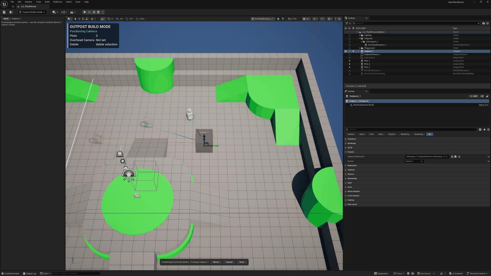
The editing panel's normal content hides itself while you're positioning. There's nothing to click there anyway, since the whole point is to fly the viewport camera into the framing you want.
Use the regular editor fly controls, then:
- Done saves that exact transform (and field of view) onto the outpost's definition.
- Revert snaps back to the last saved framing.
- Cancel abandons the session entirely.
There's one Overhead camera actor per outpost, but each plot can carry its own saved framing too. What you select before pressing O decides which one you're editing.
7. Reshaping the Outpost Volume
Every outpost gets an Outpost Volume automatically the moment it's placed. That's the one name for it worth carrying: it's the box brush whose bounds you saw drawn as a territory border back in Section 4, it's what fences a second outpost out, and it's what a plot has to fit inside.
Click Edit Volume on the editing bar (or press B) to reshape it, and the editor briefly leaves Outpost Builder mode entirely for the engine's own Brush Editing (Geometry) mode:
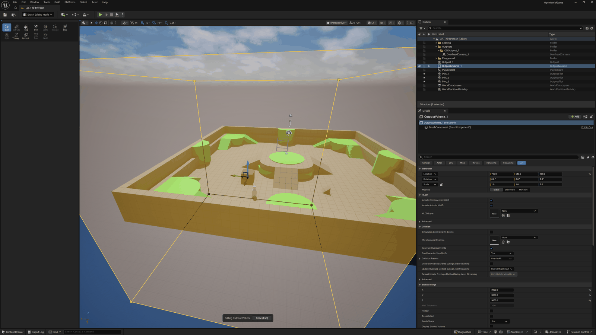
This is a genuine mode switch. The volume brush is a real geometry brush, so you get the full set of stock brush-editing tools (the panel on the left) to reshape it exactly like any other BSP volume.
The one thing that survives the switch is a small pinned bar at the bottom of the viewport: Done (Esc) takes you straight back into Outpost Builder mode, re-entering editing on the same outpost you left.
Tip: you can also leave this excursion by picking any other mode from the Modes toolbar, or by closing the map. Either way tears the pinned bar down cleanly without stranding you.
8. The Settings Surfaces: Per-User and Per-Project
Outpost Builder splits its tunables across two surfaces, and it's worth seeing both.
Editor Preferences (Per-User)
Everything that's purely a look lives in Editor Preferences > Outpost Builder: ghost colors, beam speed, HUD layout, the Overhead camera's default framing, the plot ghost's placement readouts and alignment guides, the scoped-editing fade, and the in-viewport building command grid's own Columns and anchor corner (the row count derives itself from how many tiles there are).
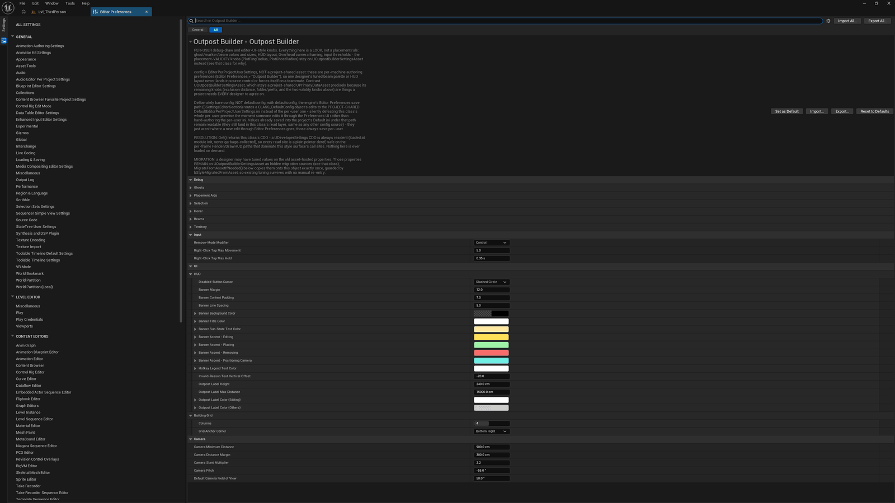
This page is a per-machine authoring preference (config = EditorPerProjectUserSettings). One
designer's tuned beam palette or HUD layout never lands in source control or forces itself on a
teammate. Expand UI > Building Grid to reach the grid's own knobs.
The Project Settings Asset (Shared)
Everything that's a placement rule rather than a look lives on the one shared
UOutpostBuilderSettingsAsset a project authors once: the outpost exclusion distance, the default
volume size, the four actor-class overrides, and the created-definition folder and prefix. The pointer
to it is the Settings Asset field back in Section 1. Opening that asset shows
the full picture:
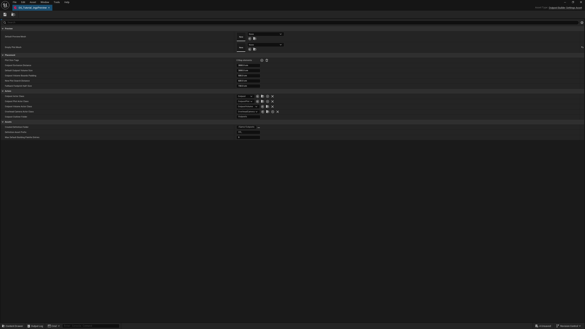
Because every designer on a project needs to agree on what's a legal plot spacing or where new definitions land, these stay on one shared asset instead of per-user preferences. That's the opposite split from Editor Preferences above.
Note: the demo fixture behind these captures assigns DA_OutpostSettings as the project's Settings Asset (visible in the Section 1 screenshot), while the Details view above shows a settings instance at its default values, which is also exactly what a fresh project sees before tuning one.
Where to Go From Here
You've now seen every screen in the plugin at least once. From here:
- Architecture - the module split and why plots/cameras write back to their outpost's definition instead of nesting under it.
- The Ed Mode - UEdMode Deep Dive - the placement state machine and input routing this tutorial only showed the surface of.
- The Toolkit - FModeToolkit and Slate - how every panel and widget shown above is actually put together.
- Prefabs & Fork-on-Stamp - what happens when you drag a placed outpost's definition back into the level.
- Reference - Public Surfaces, Hotkeys, and Testing - the full hotkey list and every public method/property, if you'd rather read signatures than click through screens.